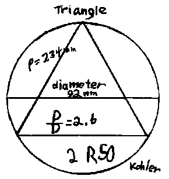
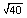
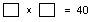
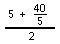
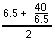
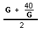
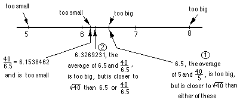

Sample Problems from Chapter 10
Chapter 10: Pi and Square Roots
1. Kohler follows Archimedes
Kohler, a 5th grader at the time,
started with a 12-dot circle. He
drew the circle, a diameter, and inscribed an equilateral triangle in it.
He measured the
diameter of the circle and perimeter of the triangle in mm. He then found
the ratio of p/d. You try it.

Notice, Kohler got 2 R50 and we had a big dicussion about leaving the answer as
a fraction and decimal, finally. He then did the same thing for
a regular hexagon,
and regular dodecagon. You try it. What if you keep going,
what's happens to this ratio p/d?
Write a program to get the
ratios of
the perimeter of polygons of 3x2n sides to the diameter (d) of the circle.
2. The Gregory-Leibnitz series
3. From Wells..
4. Iterating the sqrt of a number. One day a 7th grader, in a
moment of just playing with a calculator, put in a number, then hit the
square root key again and again. Try that.
Graph the numbers you get vs. the number of iterations. What
do you notice? Try a different number. Write a program to do this.
5. Finding the square root of 2 by squaring numbers on a
calculator.
6.
Finding by
'iteration of the average' method.
What does mean? We're looking for a number such that
when you multiply it by itself you get 40 or . Suppose we guess 5. 40/5 = 8. 8x5=40, but
the two factors have to be the same. 8 is too big
and 5 is too small. If we find their average, we'll be closer to the
. So we'll do
this= 6.5. Then we'll take 6.5 and find
the average of this and 40/6.5, like this . Notice we have an iteration
problem now where G is the guess number  ->
G! Here's a number line picture of these first 2 iterations:

So we get an infinite sequence 5, 6.5, 6.326923077, 6.324555763,
6.324555320, ... After only 4 iterations we get the correct to 9 decimal places. This
method gives a rapidly converging sequence to find the square root of a
number.
Write a program to do this iteration.
7. Using the binomial expansion to find the square root of 2.
Ways
young people have solved these kinds of problems
To order Don's
materials
To choose sample problems from
other chapters
Mathman home